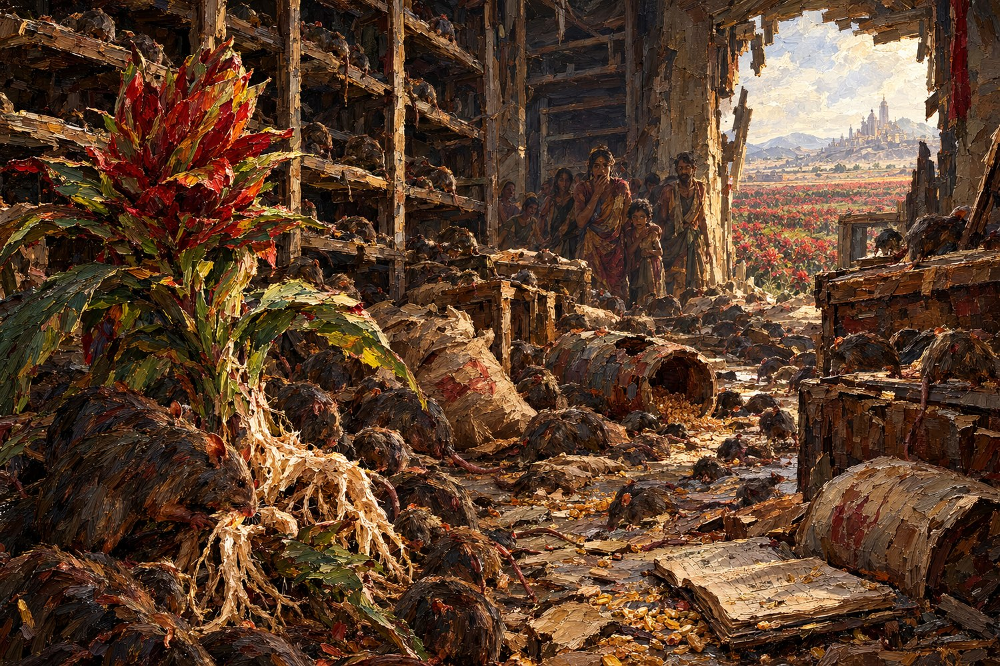

Record 11 of 12
The Vow's own roots turn out to be adequate eating, for whatever is left in an empty granary
A ravaged granary overrun with rats, an Anantavrata growing in the ruin.

Record 11 of 12
A ravaged granary overrun with rats, an Anantavrata growing in the ruin.